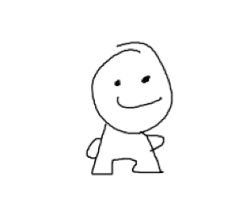

Hi, I'm Martin. Usually online I go by "thatmartin". My mom picked out the name for me when she was creating an account for me on Roblox. Speaking of childhood...

Above is a drawing of a character that was made ever since I was in Grade 1. Originally called Derps, the Funnies are tiny little creatures that don't think that much. I'd go into more details, but it'd warrant another page.
I like video games. Specifically FPS, simulation and co-op. The only game that doesn't fit within this category is Not For Broadcast, a great game. Usually, people devote their lives to video games. I used to that, but now I just pick it up just to take some ease off of school.
My favorite subjects are Drafting and Math. I like Drafting because seeing something come together perfectly is really rewarding. I like Math because it's a great exercise for the mind. I don't like it when people tap my shoulder to ask questions, though.
I take a small interest in physics stuff, like ragdolls in video games and breaking things.
That should be pretty much it. I'm hoping that both you and I both think that my life is somewhat interesting, because if it isn't, it's gonna become a looming reminder through out my entire life.